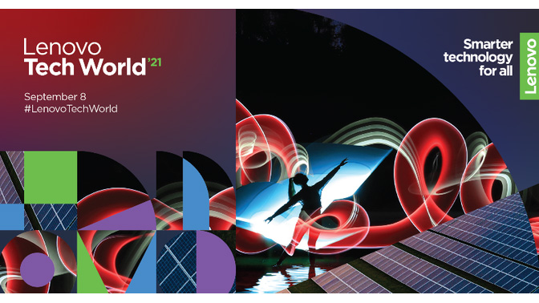

Lenovo ThinkPad: La mejor opción para profesionales
El Lenovo ThinkPad es conocido por su durabilidad y rendimiento. Descubre por qué es ideal para quienes buscan una laptop confiable para trabajar.

En este blog, exploramos todo lo relacionado con las laptops de la marca Lenovo. Desde las poderosas ThinkPad, hasta las versátiles Yoga y las potentes Legion para gamers, Lenovo tiene algo para todos. Si estás buscando una laptop confiable, con rendimiento excepcional y diseño innovador, has llegado al lugar correcto.
Lenovo es reconocido por su durabilidad, innovación y la capacidad de adaptarse a las necesidades de diferentes tipos de usuarios, ya sea para trabajo, estudio o entretenimiento. En este blog, analizamos sus características, modelos más populares y te ayudamos a elegir la mejor opción según tus necesidades.
La serie ThinkPad de Lenovo es conocida por su durabilidad y alto rendimiento. Estas laptops están diseñadas para profesionales que necesitan una máquina confiable para tareas exigentes. Con teclados cómodos, pantallas nítidas y una excelente autonomía de batería, son la elección ideal para quienes buscan productividad y estabilidad.

La serie Yoga de Lenovo combina lo mejor de ambos mundos: un diseño convertible y características de alto rendimiento. Con pantallas táctiles de alta resolución, bisagras de 360 grados y un rendimiento fluido, es la opción perfecta para usuarios que buscan versatilidad. Además, la Yoga 9i es ideal para entretenimiento y trabajo creativo.
La serie Legion está dirigida a los gamers que buscan un equipo de alto rendimiento. Con tarjetas gráficas dedicadas y procesadores rápidos, las laptops Lenovo Legion ofrecen una experiencia de juego excepcional. Son perfectas para aquellos que disfrutan de juegos AAA y trabajos gráficos intensivos como la edición de video y diseño 3D.
| Modelo | Procesador | Pantalla | Gráfica | Precio Aproximado |
|---|---|---|---|---|
| ThinkPad X1 Carbon | Intel i7 11ª Gen | 14" Full HD | Intel Iris Xe | $1,499 USD |
| Yoga 9i | Intel i7 11ª Gen | 14" 4K Touch | Intel Iris Xe | $1,799 USD |
| Legion 5 Pro | AMD Ryzen 7 5800H | 16" WQXGA | NVIDIA GeForce RTX 3070 | $1,899 USD |
El Lenovo ThinkPad es conocido por su durabilidad y rendimiento. Descubre por qué es ideal para quienes buscan una laptop confiable para trabajar.
La serie Yoga de Lenovo combina diseño convertible con potentes especificaciones, perfecta para usuarios que necesitan versatilidad.
Si eres gamer, la serie Lenovo Legion te ofrece laptops con características de alto rendimiento para jugar sin límites.